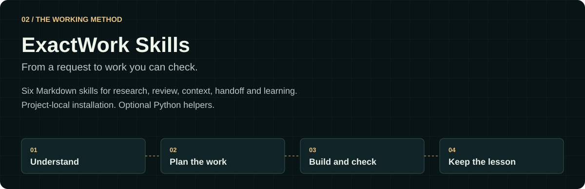
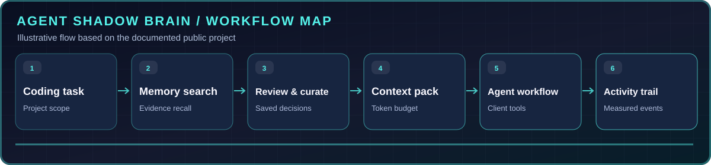

01 // AI TOOLING
◉
AGENT MEMORY NETWORK / ACTIVEOPEN-SOURCE TOOLING↗
Agent Shadow Brain
A shared local memory for coding agents. Scope context, review decisions and inspect live tool activity.
THE ENGINEERING LAB // UAE
CODE • INTELLIGENCE • AUTOMATION • NEURAL WEB
I'm Ihtisham Ahmad — a full-stack software engineer working at the intersection of AI agents, .NET systems, Python automation and practical digital products.

Visual scan effect · not biometric identification
ASP.NET Core · C# · Angular · SQL
Memory · tool orchestration · MCP
Python · REST APIs · pipelines
ProcureGuard AI • Team Purrwolf • Evidence-based multi-agent approvals with human oversight.
// 02 — FEATURED ENGINEERING
Three selected AI engineering systems, each with real source code, demos and technical details.

A shared local memory for coding agents. Scope context, review decisions and inspect live tool activity.
Evidence-led regulatory scenarios that show how a changed business decision affects requirements.
Eight specialist roles, auditable evidence, adversarial review and a final human approval gate.

Six Markdown Agent Skills for scoped work, research, review, handoff, context and learning. Optional Python helpers; project-local installation.
EXPLORE EXACTWORK →Switch between the real projects' illustrated workflows, then open the complete engineering case study.

Curate memory, build context packs and inspect coding agent activity.
OPEN COMPLETE CASE STUDY ↗Agent Brain and ExactWork Skills are hosted under @theihtishaam. CivicTwin and ProcureGuard are now hosted here too.
// 03 — THE TOOLKIT
Engineering across backend systems, intelligent workflows, modern web interfaces and reliable operations.
// ENGINEERING EXPERIENCE
Software engineering across enterprise platforms, APIs, business systems and automation.
Computer Network Systems (CNS) · UAE
REST APIs, trading/business applications, employee management tools and performance work.German Concrete Construction (GCS) · UAE
Workforce management, machinery utilization, analytics and field process automation.Xtreme Soft
C#/.NET development, team coordination, REST APIs, QA and Python data analysis.Zaid International · Remote
Web products, e-commerce, payments and enhancements to existing systems.Spartan Soft
C#, desktop and web applications, QA testing, support and deployment.// 04 — PRODUCTS IN THE WILD
Real web products, platforms and business-facing services.
// 05 — LIVE FROM GITHUB
All public repositories from the official account. The list updates when the public GitHub data changes.
Loading public projects…
Public GitHub API only; private repositories are never requested or displayed. Data may be rate-limited or cached.
// 06 — CONNECT & COLLABORATE
Engineering collaborations, applied AI research, meaningful products, or simply a good technical conversation.